9: Covariance and Correlation
You are viewing an interactive version of this reading.
Please allow ~30 seconds for packages to load before code chunks can be run
Click here for the static version
This reading:
- How can we describe the relationship between two continuous variables?
- How can we test the relationship between two continuous variables?
In the last couple of weeks we have covered a range of the basic statistical tests that can be conducted when we have a single outcome variable, and sometimes also a single explanatory variable. Our outcome variables have been both continuous (\(t\)-tests) and categorical (\(\chi^2\)-tests). We’re going to look at one more relationship now, which is that between two continuous variables. This will also provide us with our starting point for the second block of the course.
| outcome | explanatory | test | examines |
|---|---|---|---|
| continuous | t.test(y, mu = ?) | is the mean of y different from [specified value]? | |
| continuous | binary | t.test(y ~ x) | is the mean of y different between the two groups? |
| categorical | chisq.test(table(y), prob = c(?,...,?)) | is the distribution of categories of y different from [specified proportions]? | |
| categorical | categorical | chisq.test(table(y,x)) | is the distribution of categories of y dependent on the category of x? |
| continuous | continuous | ??? | ??? |
Research Question: Is there a correlation between accuracy and self-perceived confidence of memory recall?
Our data for this walkthrough is from a (hypothetical) study on memory. Twenty participants studied passages of text (c500 words long), and were tested a week later. The testing phase presented participants with 100 statements about the text. They had to answer whether each statement was true or false, as well as rate their confidence in each answer (on a sliding scale from 0 to 100). The dataset contains, for each participant, the percentage of items correctly answered, and the average confidence rating. Participants’ ages were also recorded.
The data are available at “https://uoepsy.github.io/data/recalldata.csv.
Let’s take a look visually at the relationships between the percentage of items answered correctly (recall_accuracy) and participants’ average self-rating of confidence in their answers (recall_confidence). Let’s also look at the relationship between accuracy and age.
These two relationships look quite different.
- For participants who tended to be more confident in their answers, the percentage of items they correctly answered tends to be higher.
- The older participants were, the lower the percentage of items they correctly answered tended to be.
Which relationship should we be more confident in and why?
Ideally, we would have some means of quantifying the strength and direction of these sorts of relationship. This is where we come to the two summary statistics which we can use to talk about the association between two numeric variables: Covariance and Correlation.
Covariance
Covariance is the measure of how two variables vary together. It is the change in one variable associated with the change in another variable.
Covariance is calculated using the following formula:
\[\mathrm{cov}(x,y)=\frac{\sum_{i=1}^n (x_{i}-\bar{x})(y_{i}-\bar{y})}{n-1}\] where:
- \(x\) and \(y\) are two variables; e.g.,
ageandrecall_accuracy; - \(i\) denotes the observational unit, such that \(x_i\) is value that the \(x\) variable takes on the \(i\)th observational unit, and similarly for \(y_i\);
- \(n\) is the sample size.
This can initially look like quite a big equation, so let’s break it down.
Covariance explained visually
Consider the following scatterplot:
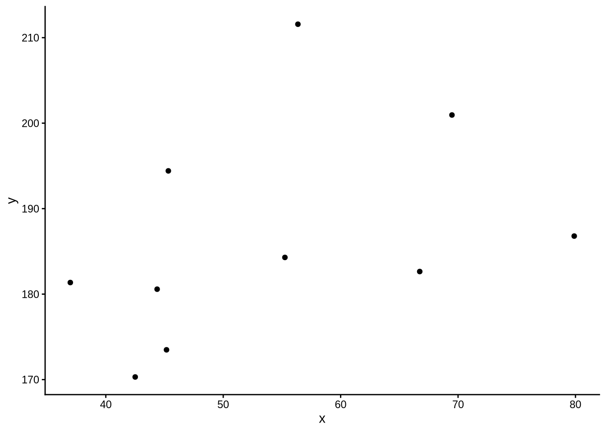
Now let’s superimpose a vertical dashed line at the mean of \(x\) (\(\bar{x}\)) and a horizontal dashed line at the mean of \(y\) (\(\bar{y}\)):
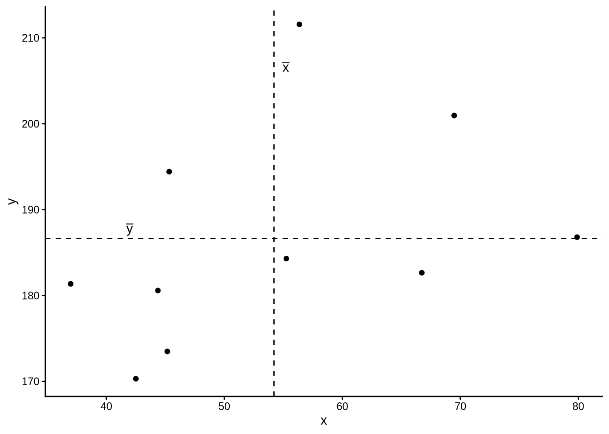
Now let’s pick one of the points, call it \(x_i\), and show \((x_{i}-\bar{x})\) and \((y_{i}-\bar{y})\).
Notice that this makes a rectangle.
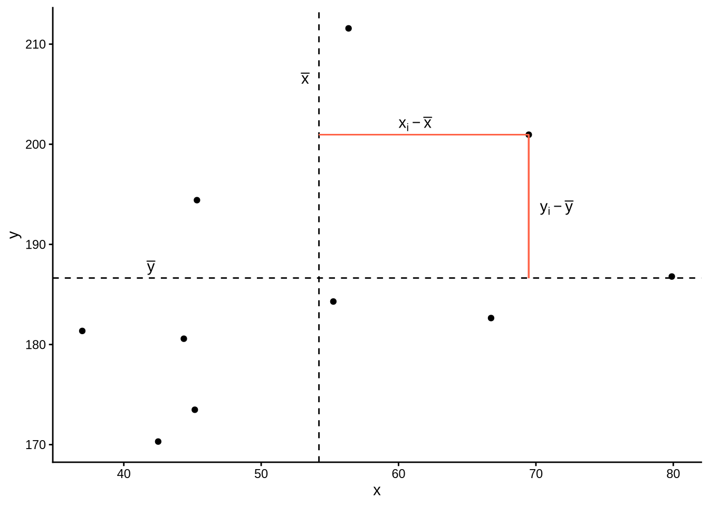
As \((x_{i}-\bar{x})\) and \((y_{i}-\bar{y})\) are both positive values, their product — \((x_{i}-\bar{x})(y_{i}-\bar{y})\) — is positive.
In fact, for any pair of values \(x_i\) and \(y_i\) where both values are above their respective means, or both are below, then product \((x_{i}-\bar{x})(y_{i}-\bar{y})\) will be positive (remember that a negative multiplied by a negative gives a positive):
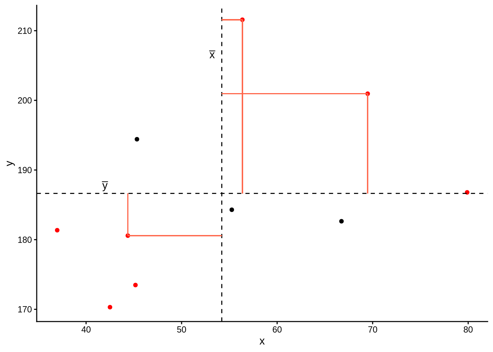
And for all those other points (in blue) the product \((x_{i}-\bar{x})(y_{i}-\bar{y})\) is negative:
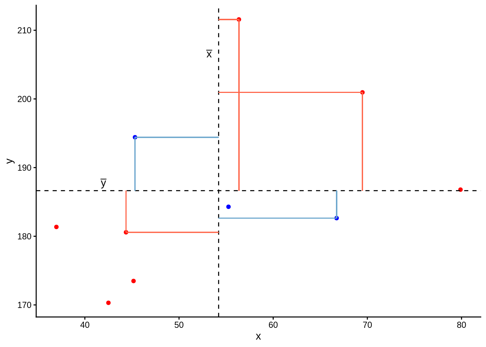
Now let’s take another look at the formula for covariance:
\[\mathrm{cov}(x,y)=\frac{\sum_{i=1}^n (x_{i}-\bar{x})(y_{i}-\bar{y})}{n-1}\]
It is the sum of all these products divided by \(n-1\). It is the average of the products! You can almost think of this as the average area of all the rectangles!
So for plots like this where we have been colouring them in blue or red, the measure of covariance moves up and down depending upon how much blue vs how much red there is! It will be zero when there is the same amount of blue as there is red.
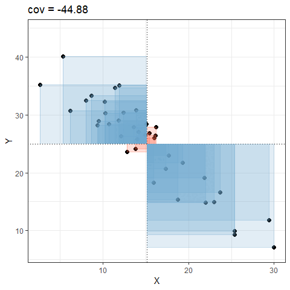
Covariance in R
We can calculate covariance in R using the cov() function.
cov() can take two variables cov(x = , y = ).
If necessary, we can choose use only the complete observations (i.e. ignoring all rows where either value is an NA) by specifying:
cov(x = ..., y = ..., use = "complete.obs")
CautionStep-by-step calculations of covariance
- Create 2 new columns in the memory recall data, one of which is the mean recall accuracy, and one which is the mean recall confidence.
Now create three new columns which are:
- recall accuracy minus the mean recall accuracy - this is the \((x_i - \bar{x})\) part.
- confidence minus the mean confidence - and this is the \((y_i - \bar{y})\) part.
- the product of i. and ii. - this is calculating \((x_i - \bar{x})\)\((y_i - \bar{y})\).
- recall accuracy minus the mean recall accuracy - this is the \((x_i - \bar{x})\) part.
- Finally, sum the products, and divide by \(n-1\)
Which is the same result as using cov():
Correlation
One thing to note with covariance is that it is sensitive to the units of measurement. The covariance between height-in-centimeters and weight-in-grams will be a much bigger number than the covariance between height-in-meters and weight-in-kilograms.
Correlation solves this issue, and you can think of correlation as a standardised covariance. It has a scale from negative one to one, on which the distance from zero indicates the strength of the relationship.
Just like covariance, positive/negative values reflect the nature of the relationship.
The correlation coefficient is a standardised number which quantifies the strength and direction of the linear relationship between two variables. In a population it is denoted by \(\rho\), and in a sample it is denoted by \(r\).
We can calculate \(r\) using the following formula:
\[
r_{(x,y)}=\frac{\mathrm{cov}(x,y)}{s_xs_y}
\]
We can actually rearrange this formula to show that the correlation is simply the covariance, but with the values \((x_i - \bar{x})\) divided by the standard deviation (\(s_x\)), and the values \((y_i - \bar{y})\) divided by \(s_y\): \[
r_{(x,y)}=\frac{1}{n-1} \sum_{i=1}^n \left( \frac{x_{i}-\bar{x}}{s_x} \right) \left( \frac{y_{i}-\bar{y}}{s_y} \right)
\]
The correlation is the simply the covariance of standardised variables (variables expressed as the distance in standard deviations from the mean).
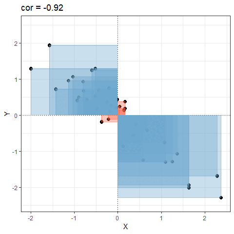
Properties of correlation coefficients
- \(-1 \leq r \leq 1\)
- The sign indicates the direction of association
- positive association (\(r > 0\)) means that values of one variable tend to be higher when values of the other variable are higher
- negative association (\(r < 0\)) means that values of one variable tend to be lower when values of the other variable are higher
- no linear association (\(r \approx 0\)) means that higher/lower values of one variable do not tend to occur with higher/lower values of the other variable
- The closer \(r\) is to \(\pm 1\), the stronger the linear association
- \(r\) has no units and does not depend on the units of measurement
- The correlation between \(x\) and \(y\) is the same as the correlation between \(y\) and \(x\)
Correlation in R
Just like R has a cov() function for calculating covariance, there is a cor() function for calculating correlation:
If necessary, we can choose use only the complete observations (i.e. ignoring all rows where either value is an NA) by specifying:
cor(x = ..., y = ..., use = "complete.obs")
NoteStep-by-step calculations
We calculated above that \(\text{cov}(\text{recall-accuracy}, \text{recall-confidence})\) = 118.077.
To calculate the correlation, we can simply divide this by the standard deviations of the two variables \(s_{\text{recall-accuracy}} \times s_{\text{recall-confidence}}\)
Which is the same result as using cor():
Correlation Tests
Now that we’ve seen the formulae for covariance and correlation, as well as how to quickly calculate them in R using cov() and cor(), we can use a statistical test to establish the probability of finding an association this strong by chance alone.
Hypotheses:
The hypotheses of the correlation test are, as always, statements about the population parameter (in this case the correlation between the two variables in the population - i.e., \(\rho\)).
If we are conducting a two tailed test, then
- \(H_0: \rho = 0\). There is not a linear relationship between \(x\) and \(y\) in the population.
- \(H_1: \rho \neq 0\) There is a linear relationship between \(x\) and \(y\).
If we instead conduct a one-tailed test, then we are testing either
- \(H_0: \rho \leq 0\) There is a negative or no linear relationship between \(x\) and \(y\)
vs
\(H_1: \rho > 0\) There is a positive linear relationship between \(x\) and \(y\). - \(H_0: \rho \geq 0\) There is a positive or no linear relationship between \(x\) and \(y\)
vs
\(H_1: \rho < 0\) There is a negative linear relationship between \(x\) and \(y\).
Test Statistic
The test statistic for this test here is another \(t\) statistic, the formula for which depends on both the observed correlation (\(r\)) and the sample size (\(n\)):
\[t = r \sqrt{\frac{n-2}{1-r^2}}\]
p-value
We calculate the p-value for our \(t\)-statistic as the long-run probability of a \(t\)-statistic with \(n-2\) degrees of freedom being less than, greater than, or more extreme in either direction (depending on the direction of our alternative hypothesis) than our observed \(t\)-statistic.
Assumptions
For a test of Pearson’s correlation coefficient \(r\), we need to make sure a few conditions are met:
- Both variables are quantitative
- Both variables should be drawn from normally distributed populations.
- The relationship between the two variables should be linear.
NoteQuick and easy
cor.test()
We can test the significance of the correlation coefficient really easily with the function cor.test():
by default, cor.test() will include only observations that have no missing data on either variable.
e.g., running cor.test() on x and y in the dataframe below will include only the yellow rows:
| x | y |
|---|---|
| 1 | NA |
| 2 | 6 |
| NA | 8 |
| 4 | 7 |
| 5 | 9 |
NoteStep-by-step calculations
Or, if we want to calculate our test statistic manually:
Cautionoptional: (completely optional!) why t?
Why exactly do we have a \(t\) statistic? We’re calculating \(r\), not \(t\)??
Remember that in hypothesis testing, we need a distribution against which to compare a statistic. But \(r\) is bounded (it can only be between -1 and 1). This means the distributions of “\(r\)’s that we would expect if under repeated sampling” is not easily defined in a standard way. Consider how the shape changes when our sample size changes:
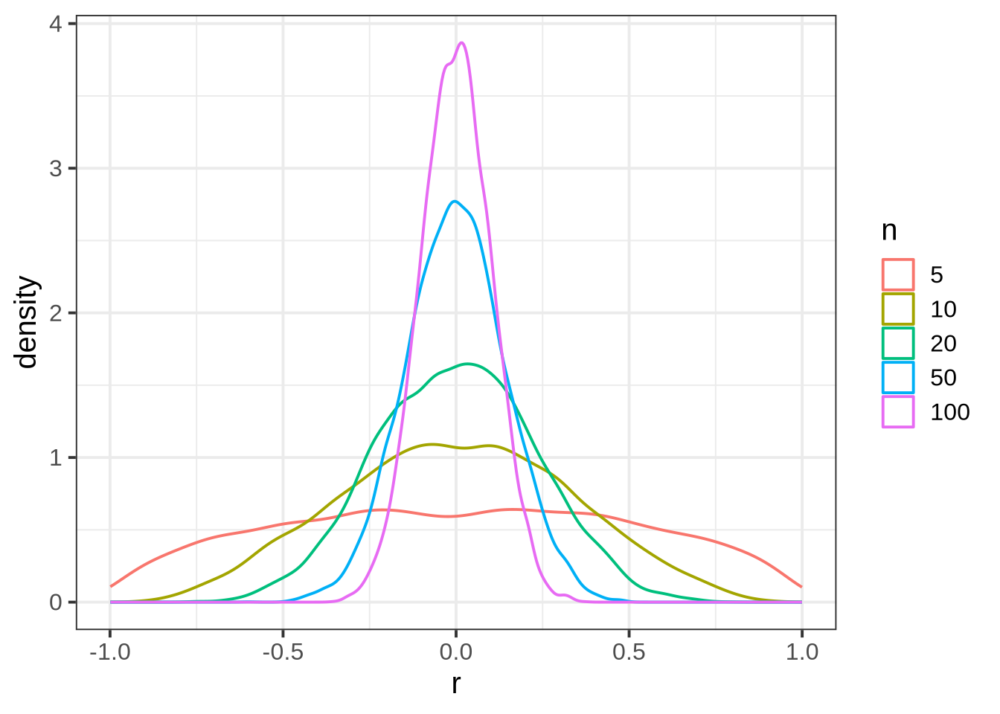
So what we do is convert the \(r\) statistic to a \(t\) statistic, and then we can compare that to a \(t\) distribution!
\(t\) statistics are generally calculated by using \(\frac{estimate - 0}{standard\, error}\).
The standard error for a correlation \(r\) is quantifiable as \(\sqrt{\frac{(1-r^2)}{(n-2)}}\).
We can think of this as what variance gets left-over (\(1-r^2\)) in relation to how much data is free to vary (\(n-2\) because we have calculated 2 means in the process of getting \(r\)). This logic maps to how our standard error of the mean was calculated \(\frac{\sigma}{\sqrt{n}}\), in that it is looking at \(\frac{\text{leftover variation}}{\text{free datapoints}}\).
What this means is we can convert \(r\) into a \(t\) that we can then test!
\[ t = \, \, \frac{r}{SE_r} \,\,=\,\, \frac{r}{\sqrt{\frac{(1-r^2)}{(n-2)}}} \,\,=\,\, r \sqrt{\frac{n-2}{1-r^2}} \]
Cautions!
Correlation is an invaluable tool for quantifying relationships between variables, but must be used with care.
Below are a few things to be aware of when we talk about correlation.
Correlation can be heavily affected by outliers. Always plot your data!
The two plots below only differ with respect to the inclusion of one observation. However, the correlation coefficient for the two sets of observations is markedly different.
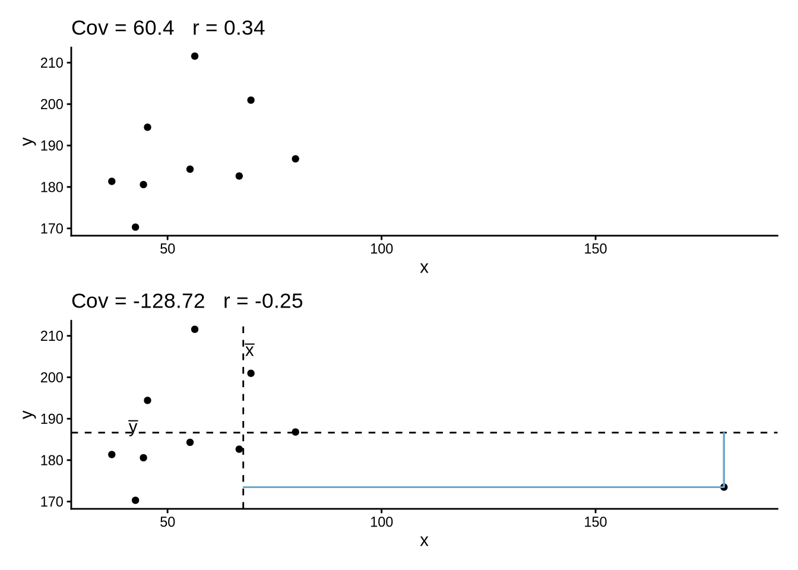
r = 0 means no linear association. The variables could still be otherwise associated. Always plot your data!
The correlation coefficient in Figure 1 below is negligible, suggesting no linear association. The word “linear” here is crucial - the data are very clearly related.
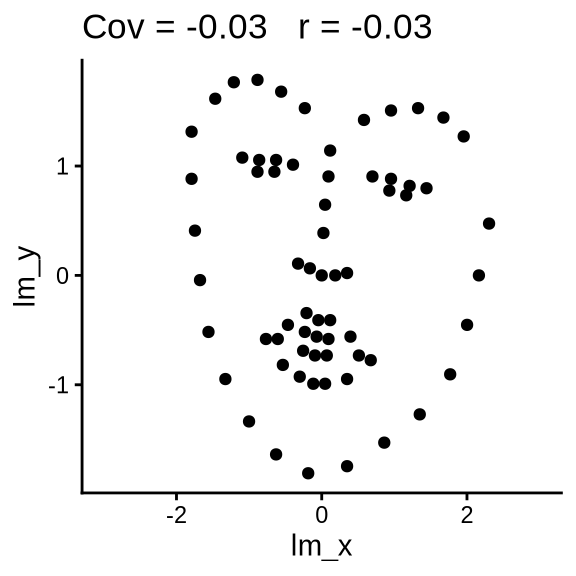
Similarly, take look at all the sets of data in Figure 2 below. The summary statistics (means and standard deviations of each variable, and the correlation) are almost identical, but the visualisations suggest that the data are very different from one another.

Correlation does not imply causation!
You will have likely heard the phrase “correlation does not imply causation”. There is even a whole wikipedia entry devoted to the topic.
Just because you observe an association between x and y, we should not deduce that x causes y
An often cited paper which appears to fall foul of this error took a correlation between a country’s chocolate consumption and its number of nobel prize winners (see Figure 4) to suggest a causal relationship between the two (“chocolate intake provides the abundant fertile ground needed for the sprouting of Nobel laureates”):
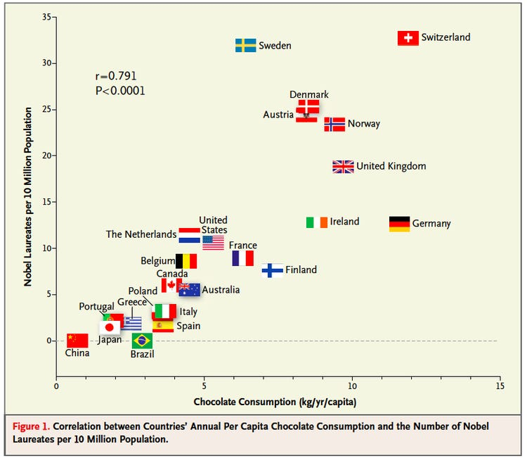